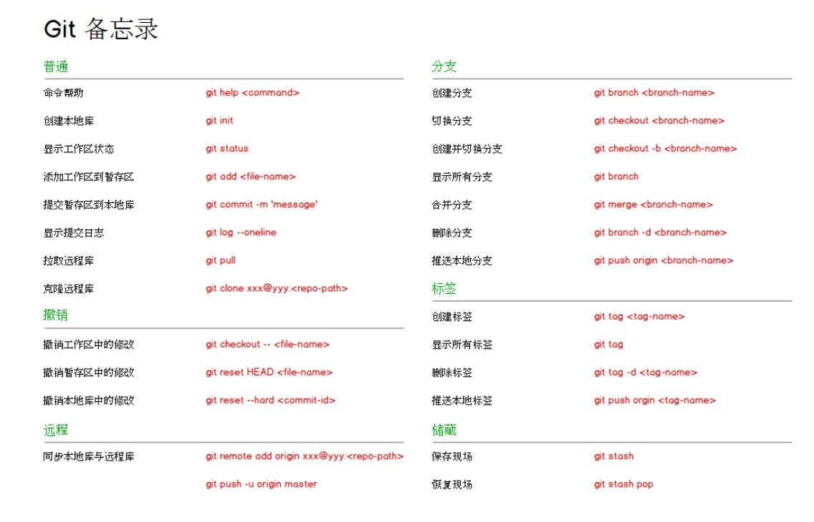
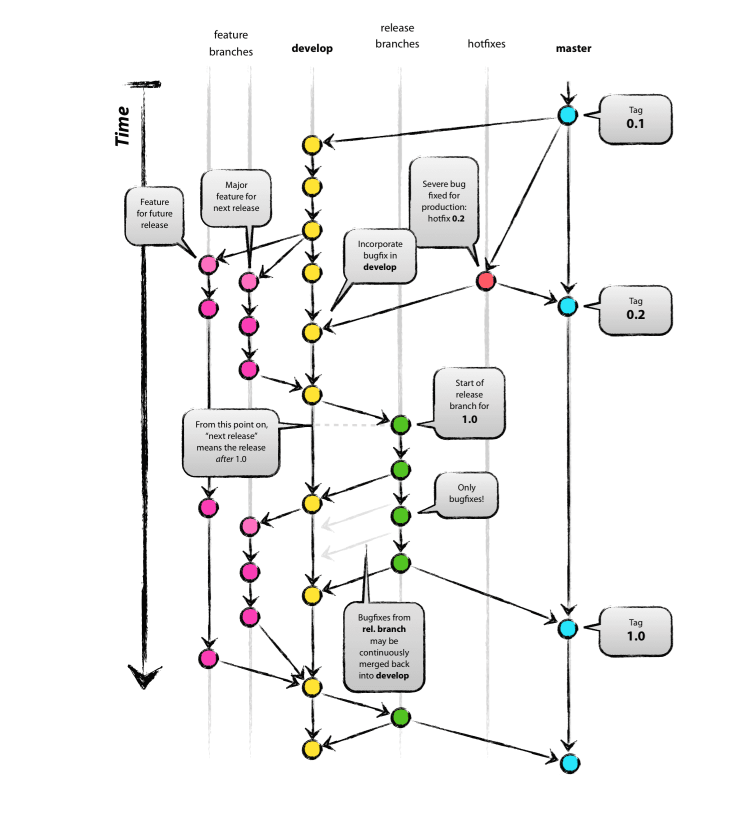

git笔记

-
通过点击页面右上角的’Fork’按钮来分叉[项目存储库]
-
从你的GitHub账户克隆scikit-learn repo的分支到你的本地磁盘
1
2$ git clone git@github.com：YourLogin / scikit-learn.git
$ cd scikit-learn -
创建一个
feature分支来保存你的发展变化1
git checkout -b my-feature
-
在您的功能分支上开发功能。使用
git add git commit添加文件：1
2$ git add modified_files
$ git commit -
在Git中记录您的更改，然后将更改推送到您的GitHub帐户
1
$ git push -u origin my-feature
## 常用命令1
2
3
4
5
6
7
8
9
10
11
12
13
14
15
16
17
18
19
20
21
22
23
24
25
26
27
28
29git init
git add
git commit -m ""
git status
git diff
git log
git log --pretty=online
git log --graph --pretty=oneline --abbrev-commit
git reset --hard HEAD^
git reset --hard 版本号
git reflog
git diff HEAD -- readme.txt
git checkout -- file
git rm
git push -u origin master
git remote add origin git@github.com:michaelliao/learngit.git
git checkout -b dev ==git branch dev + git checkout dev
git checkout -b dev origin/dev
git branch
git merge dev
git merge --no-ff -m "merge with no-ff" dev
git branch -d dev
git stash
git stash pop
git branch -D feature-vulcan
git remote
git branch --set-upstream dev origin/dev
git pull
git tag v1.0
-
场景1：当你改乱了工作区某个文件的内容，想直接丢弃工作区的修改时，用命令
git checkout -- file。 -
场景2：当你不但改乱了工作区某个文件的内容，还添加到了暂存区时，想丢弃修改，分两步，第一步用命令
git reset HEAD file，就回到了场景1，第二步按场景1操作。 -
场景3：已经提交了不合适的修改到版本库时，想要撤销本次提交，版本回退，不过前提是没有推送到远程库
-
查看分支：
git branch -
创建分支：
git branch <name> -
切换分支：
git checkout <name> -
创建+切换分支：
git checkout -b <name> -
合并某分支到当前分支：
git merge <name> -
删除分支：
git branch -d <name> -
查看远程库信息，使用
git remote -v； -
本地新建的分支如果不推送到远程，对其他人就是不可见的；
-
从本地推送分支，使用
git push origin branch-name，如果推送失败，先用git pull抓取远程的新提交； -
在本地创建和远程分支对应的分支，使用
git checkout -b branch-name origin/branch-name，本地和远程分支的名称最好一致； -
建立本地分支和远程分支的关联，使用
git branch --set-upstream branch-name origin/branch-name； -
从远程抓取分支，使用git pull，如果有冲突，要先处理冲突。
-
补充提交
git commit --amend -
撤销上次提交
git reset --soft HEAD~ -
撤销上次提交和暂存区
git reset --mixed HEAD~ -
撤销所有，整体回到上次修改
get reset --hard HEAD~ -
将文件从暂存区撤回
git reset HEAD readme.txt -
撤销文件的修改
git checkout -- readme.md
git flow

- 创建develop分支
1 | git branch develop |
- 开始新Feature分支
1 | git checkout -b feature/1 develop |
- 完成feature分支
1 | git pull origin develop |
- 开始release
1 | git checkout -b release-1.0 develop |
- 完成release
1 | git checkout master |
- 开始Hotfix
1 | git checkout -b hotfix-1.0 master |
- 完成hotfix
1 | git checkout master |